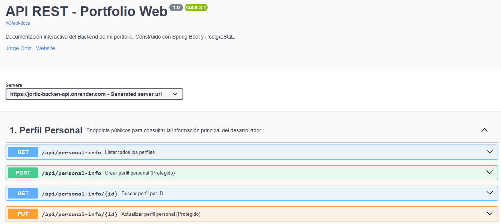

My Portfolio Backend
Proyecto técnico y demostrativo de Backend desarrollado con Java 21 y Spring Boot 4. Incluye API REST, PostgreSQL, Spring Security, Thymeleaf e integración con IA mediante Groq.
Java 21 · Spring Boot 4 · REST API · PostgreSQL · Spring Security · Thymeleaf · Groq